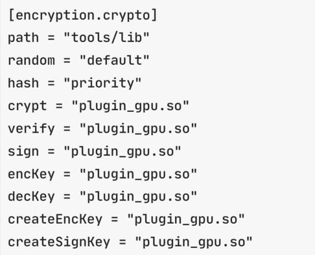

加密机制¶
目前平台支持国际标准（standard）和国密标准（gm）两种密码体系。采用可插拔的多级加密机制对于业务完整生命周期所涉及的数据、通信传输、物理连接等都进行了不同策略的加密，保障系统的安全性。
哈希算法¶
哈希是一种散列函数，把任意长度的输入通过哈希算法，变换成固定长度的输出（哈希值），哈希值的空间通常远小于输入的空间，并且哈希函数具有不可逆性，根据哈希值无法反推输入原文的内容。
哈希算法在平台中有着广泛运用，例如交易的摘要、合约的地址、用户地址等都运用了哈希算法。平台提供了可拔插的、不同安全级别的哈希算法选项。安全等级由低到高分别有SHA2-256、SHA3-256、SHA2-512、SHA3-512等，同时平台也支持相应的国密哈希算法SM3。这些哈希算法都可以保证为消息生成体积可控、不可逆推的数字指纹，保证平台的数据安全。
交易签名¶
为了防止交易被篡改，平台采用成熟的椭圆曲线数字签名算法（Elliptic Curve Digital Signature Algorithm，简称ECDSA）对交易进行签名，保证平台的身份安全。同时也支持基于椭圆曲线密码的国密标准算法SM2。
平台使用了secp256k1曲线、secp256r1曲线（SM2则使用国家密码标准推荐参数）实现了数字签名算法，可供用户自行选择后对平台交易进行签名验签，保证交易的正确性以及完整性。同时平台支持该算法对节点间消息进行签名验证，保证节点间消息通信的完整性以及正确性。
密钥协商¶
在网络通信过程中，使用会话密钥对传输的信息进行加密，可以防止黑客窃听机密消息进行欺诈等行为。平台通过实现椭圆曲线Diffie-Hellman（ECDH）密钥协商协议完成会话密钥的建立和网络中用户之间的相互认证，同时支持国家密码标准的密钥协商算法SM2，保证通信双方可以在不安全的公共媒体上创建共享的机密协议，而不必事先交换任何私有信息。
密钥协商在身份认证和交易安全中都具有重要的作用，通过密钥协商建立起的安全通信信道能够实现安全的信息交换，保证了平台的通信安全。以安全身份认证为前提建立的密钥协商安全信道，首先能够确认通信双方的身份合法，再次，通过对称加密能够大大提高通信效率，因为并不需要每次通信都去认证身份，信道就能够确定通信双方的身份。
基于对称加密的密文传输¶
平台在通信双方协商出一个机密共享密钥后，再基于对称加密算法保证节点间的密文传输，使得计算上破解传输内容的难度更高，从而保证平台消息传输的高安全性。
对称加密也称常规加密，私钥、或者单钥加密，一个完整的对称加密方案由五个部分组成：
明文（plaintext）：原始的消息或者数据，作为算法输入；
加密算法（encryption algorithm）：加密算法对明文进行各种替换和转换；
秘密密钥（secret key）：算法输入，算法进行替换和转换都依赖于秘密密钥。
密文（ciphertext）：已被打乱的消息，作为加密算法的输出，取决于明文和秘密密钥。对于一个给定的消息，两个不同的秘密密钥会产成不同的密文。
解密算法（decryption algorithm）：本质上是加密算法的逆运算。使用密文和秘密密钥产生原始明文。
平台支持AES（Advanced Encryption Standard）算法，即高级加密标准，该算法是一个基于排列和置换运算、迭代的、对称密钥分组的密码。它可以使用128、192 和 256 位密钥，并且用 128 位（16字节）分组加密和解密数据。同时也支持国家密码标准的对称加密算法SM4。
传输层安全¶
除了上述提到的密钥协商与密文传输以外，平台节点间还通过传输层安全TLS（Transport Layer Security）来保证通信安全。TLS 能够在传输层保障信息传输的安全性，是目前较为通用的网络传输实施标准，在几乎所有的网络安全传输中都采用了该技术，如google、淘宝、百度、微信等。
硬件安全¶
平台为了保证平台的安全性，采用软硬一体化的设计，将平台软件与硬件相结合。软件集合即为平台软件主体，负责区块链网络账户交易等正常操作；硬件部分为硬件密码卡、密码钥匙（广州江南科友科技股份有限公司研发的型号为SJK1862-G 的PCIE密码卡和提供给用户保管自身私钥的SJK1905智能密码钥匙）、TEE可信执行环境，负责随机数生成、密钥存储、账本数据加密等操作。
密码机中间件¶
针对有特殊密码安全的商业场景，区块链部署机构拥有成熟的密码学硬件组合（如：密码机）来支持各类密码学算法的使用。趣链区块链平台通过完整解耦密码学模块的九大功能，支持区块链部署机构按需配置自有密码学硬件作为密码学插件实现平台的密码学功能。
密码模块共有九大功能，分别是随机数生成、哈希摘要、对称加解密、生成签名验签密钥对、签名、验签、生成加密解密密钥对、公钥加密、公钥解密。针对上述九大功能，区块链部署机构可按需对每一个功能选取三种策略模式中的一种：
default模式 —— 通过对密码功能配置“default”模式，该密码功能将使用平台软件密码学模块来提供服务；
priority模式 —— 当平台接入了多个密码学插件时，支持使用对密码功能配置“priority”模式。配置为该模式时，用户可对密码学插件所支持的功能进行优先级分值设置，平台将根据分值筛选出分值最高的密码学插件来提供该密码功能的服务；
指定插件模式 —— 通过对密码功能配置指定的密码学插件，该功能将使用指定的密码学插件来提供服务。
